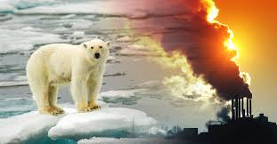
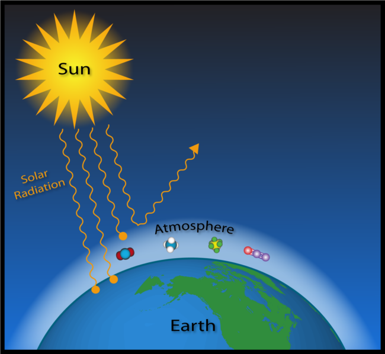

EL EFECTO INVERNADERO NATURAL: La atmósfera de la Tierra se comporta como un invernadero gigante, a pesar de que atrapa el calor de una manera diferente. Los gases en la alta atmósfera, como el dióxido de carbono y el metano se comportan como un enorme cristal curvado que envuelve al planeta.Los rayos del sol (sobre todo la luz visible, la longitud de onda corta y la radiación ultravioleta de alta energía) pasan directamente a través de esta capa gaseosa y producen el calentamiento de la Tierra. A su vez el planeta emite energía que se irradia hacia el espacio.Parte de esta radiación saliente es reflejada de vuelta a la Tierra, atrapando eficazmente el calor y manteniendo el planeta aproximadamente 33 grados más caliente de lo que debería estar. Esto se llama el efecto invernadero natural y es algo beneficioso, ya que sin él la Tierra sería demasiado fría y no tendríamos la enorme diversidad de vida que la caracteriza. La atmósfera de la Tierra se comporta como un invernadero gigante, a pesar de que atrapa el calor de una manera diferente. Los gases en la alta atmósfera, como el dióxido de carbono y el metano se comportan como un enorme cristal curvado que envuelve al planeta.Los rayos del sol (sobre todo la luz visible, la longitud de onda corta y la radiación ultravioleta de alta energía) pasan directamente a través de esta capa gaseosa y producen el calentamiento de la Tierra. A su vez el planeta emite energía que se irradia hacia el espacio.Parte de esta radiación saliente es reflejada de vuelta a la Tierra, atrapando eficazmente el calor y manteniendo el planeta aproximadamente 33 grados más caliente de lo que debería estar. Esto se llama el efecto invernadero natural y es algo beneficioso, ya que sin él la Tierra sería demasiado fría y no tendríamos la enorme diversidad de vida que la caracteriza.
EL AUMENTO DEL EFECTO INVERNADERO
Desde la revolución industrial de los siglos XVIII y XIX, cuando se quemó carbón por primera vez para hacer funcionar máquinas de vapor a gran escala, los seres humanos han estado utilizando la energía en cantidades cada vez mayores. Los motores de los vehículos que se inventaron a mitad del siglo XIX, funcionan combinando la gasolina con el oxígeno del aire para generar calor mediante una reacción química llamada combustión. Como un subproducto de la combustión se libera dióxido de carbono (el mismo gas de nuestros cuerpos exhalan).De manera similar, las plantas de energía utilizan la combustión para producir electricidad quemando combustibles como el carbón, el gas y el petróleo, por lo que también emiten dióxido de carbono. La mayor parte de la energía que utilizan las personas proviene del uso de los llamados combustibles fósiles. El dióxido de carbono se desplaza hacia la atmósfera y hace que la capa de gases de efecto invernadero de la Tierra se engrose. Como resultado una parte más importante del calor del Sol queda atrapado dentro de la atmósfera y el planeta se calienta. Esto es a menudo descrito como un proceso antropogénico, que simplemente significa que ha sido causado por los seres humanos. A pesar de que una pequeña minoría de personas discute esto, la inmensa mayoría de los científicos del clima del mundo cree que el calentamiento global es "muy probablemente" causado por las emisiones humanas de gases de efecto invernadero.